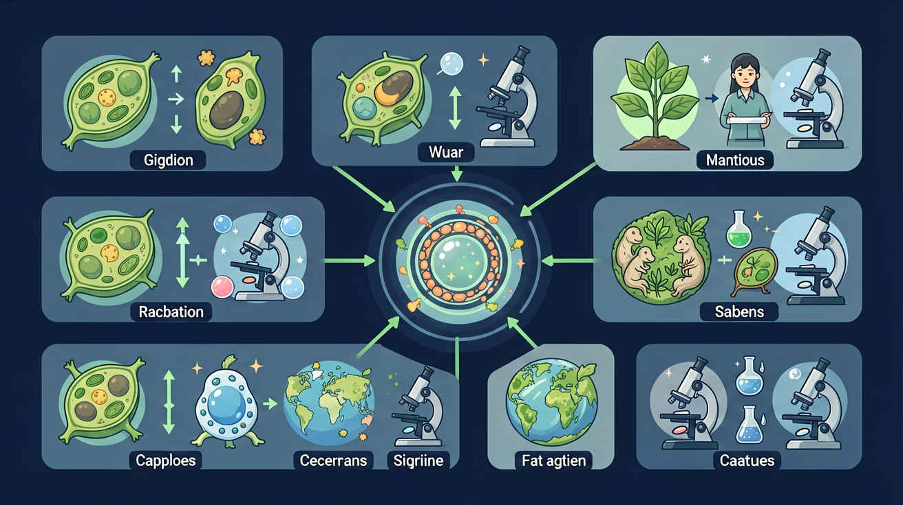
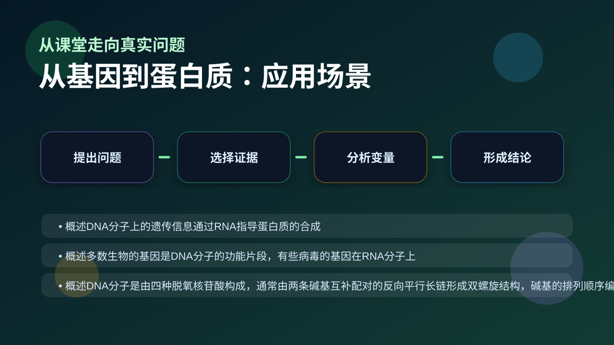

Gallery v1.0.0 · skill v7.14
遗传信息怎样被保存、表达、传递，又怎样影响性状？

先选一个卡点。后面的例子、互动和 AI 学伴都会围绕它给你最小提示。
选择或输入后，本课会围绕你的问题展开。
如果学生只说出概念名称，继续追问：题干里哪个证据最关键？这个证据对应分子、细胞、个体还是生态系统层级？如果改变 DNA模板链、mRNA密码子、tRNA反密码子、核糖体和氨基酸顺序 中的一个条件，结果会怎样？这三问能把答案从背诵推进到科学解释。
❓ 为啥DNA上的基因能变成我身上的蛋白质？
❓ 转录和翻译到底有啥区别？
❓ 如果基因突变了，蛋白质会变成啥样？
学完这一课，这些问题你都能自信地回答。
已经知道：此前已学习DNA双螺旋结构、基因是遗传单位，并初步了解蛋白质由氨基酸组成（如血红蛋白案例），掌握染色体携带遗传信息的基本概念
但问题是：学生常混淆转录与翻译的场所（核内vs细胞质），难以理解无义突变如何通过提前终止密码子导致蛋白质功能丧失，且对tRNA反密码子与mRNA密码子的配对逻辑存在计算错误
所以学：当基因检测报告显示'β-珠蛋白基因CD41/42突变'时，医生需解读该移码突变如何改变mRNA阅读框架，最终导致地中海贫血症患者的血红蛋白结构异常
合成含 30 个氨基酸的多肽，不考虑终止密码子时 DNA 至少需要多少碱基？
比较错义突变、无义突变和移码突变对乳糖酶蛋白结构的影响
现象入口：一个基因序列改变，可能导致蛋白质氨基酸序列变化，进而影响性状。
机制解释：遗传信息通过转录形成mRNA，再经翻译合成蛋白质；密码子决定氨基酸序列。
证据抓手：证据来自mRNA序列、密码子表、蛋白质产物和突变表型。
变量线索：DNA模板链、mRNA密码子、tRNA反密码子、核糖体和氨基酸顺序。做题时先找变量，再判断机制，最后写证据。
情境：镰刀型细胞贫血可由一个碱基替换导致氨基酸改变，说明信息流能影响蛋白质功能。
作答路径：镰刀型贫血患者血红蛋白异常→β珠蛋白基因A→T突变使第6位谷氨酸变为缬氨酸→电泳显示异常血红蛋白条带，证明单碱基替换可通过改变氨基酸影响蛋白质功能
评分提醒：典型失分：混淆DNA/mRNA碱基比例（1:3或1:6），忽视终止密码子对氨基酸计数影响，未区分原核与真核基因表达差异
观察 mRNA 上三个相邻碱基组成的密码子，决定一个氨基酸
分析真核基因转录时，内含子序列被剪切的过程
阐明密码子简并性：多个密码子可编码同一氨基酸
应用 1:6 比例计算 50 个氨基酸对应的 DNA 碱基数

分析基因工程表达蛋白、遗传病突变，都要沿DNA→RNA→蛋白质追踪。
提交后会检查你的解释是否包含现象、机制和变量。
每 3 个相邻碱基构成一个密码子、决定 1 个氨基酸——拖动氨基酸数，看 mRNA 与基因碱基数如何同步变化。
💡 探究任务：把氨基酸数拉到 150，读出 mRNA 至少 450 个碱基、基因编码区至少 900 个碱基（双链），并说明终止密码子为何让实际值更大。
下列哪项直接携带遗传信息从细胞核到核糖体？
先独立作答，再点选项查看对错与错因。
乳糖酶基因在哪种细胞器中完成转录？
下列哪项直接影响乳糖酶蛋白的氨基酸序列？
若LCT基因发生无义突变，会导致：
乳糖酶基因表达时，____携带遗传信息从细胞核进入细胞质。
答案：mRNA
mRNA是转录产物，作为模板指导翻译
翻译过程中，tRNA通过____与mRNA的密码子配对。
答案：反密码子
tRNA的反密码子与mRNA密码子碱基互补
某基因编码区突变导致翻译提前终止，最可能的原因是？
学习小结：基因通过转录形成mRNA，经密码子指导翻译为多肽链，真核生物需内含子剪切，密码子简并性使突变不必然改变氨基酸
把转录和翻译发生位置、模板和产物混淆，是本节高频错误。
只说“增加/减少”不够，要写清改变的是 DNA模板链、mRNA密码子、tRNA反密码子、核糖体和氨基酸顺序 中的哪一个。
没有实验现象、曲线趋势或结构证据，答案就像猜测。
✅ 只有基因区能被转录
💡 混淆了基因与DNA全序列
✅ AUG编码甲硫氨酸且启动翻译，UAA/UAG/UGA终止
💡 未理解密码子的双重功能
口诀：DNA转录RNA，翻译蛋白不迷路
类比：基因像菜谱，mRNA是外卖订单，蛋白质就是送到家的饭菜
视频用语音和动态画面回顾本课主线：问题情境 → 机制模型 → 证据判断 → 迁移应用。
先用 PhET 观察转录和翻译如何把遗传信息转成蛋白质，再回到本课的 Canvas 任务，把“信息流”与 从基因到蛋白质 联系起来。
💡 操作提示：拖动调控元件，观察 mRNA 和蛋白质产量变化，思考“表达量变化”和“性状变化”之间的证据链。
写出密码子ACG对应的氨基酸
分析β珠蛋白基因第6位GAG→GTG突变如何引发镰刀型贫血
设计实验验证UAA终止密码子不编码氨基酸